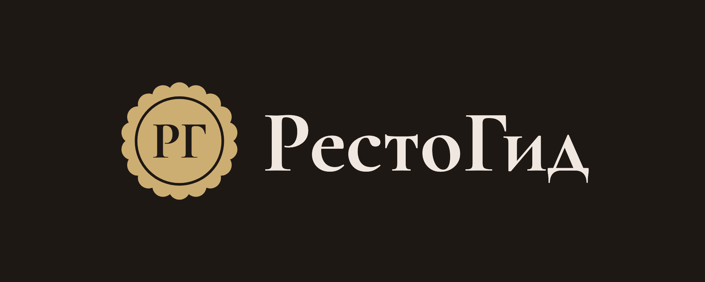
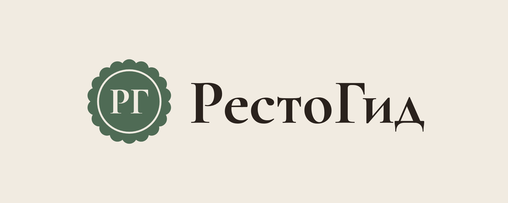
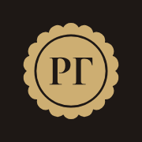
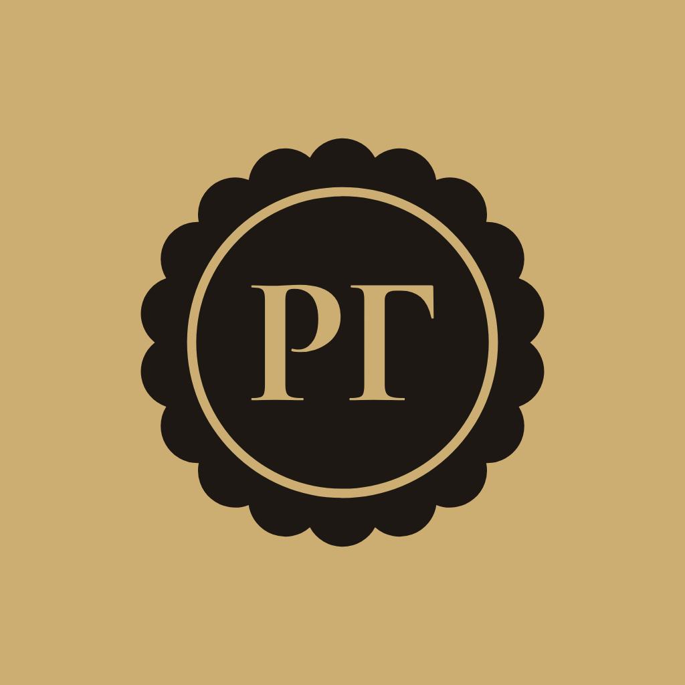
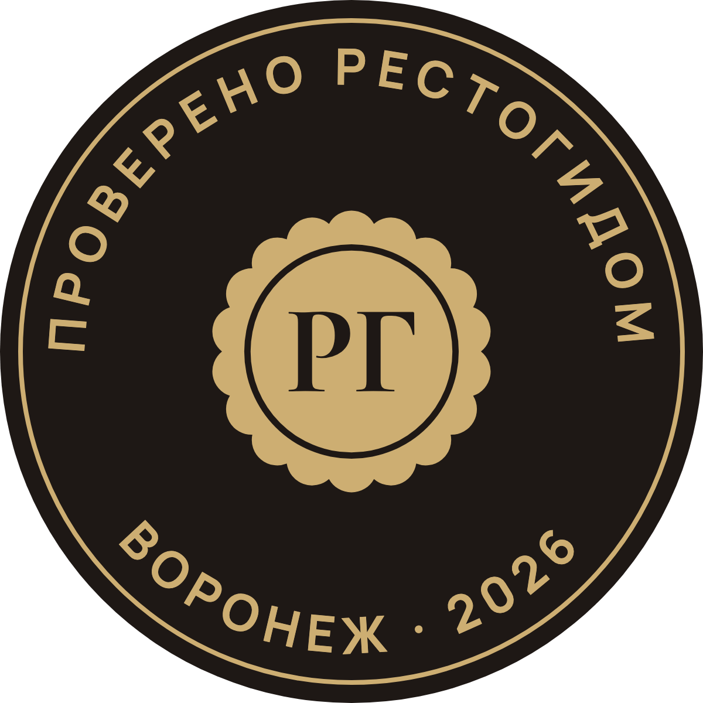

<!-- Страница команды РестоГида. Открывается по адресу #team; стили и текст — только в этом файле. -->
<style>
/* Цвета — переменные темы из css/style.css; свои здесь только линии, пометки и предупреждения. */
.doc { --line: rgba(240, 232, 224, 0.12); --chip: #362C26; --warn: #E0A27E;
  display: flex; flex-direction: column; gap: 16px; max-width: 680px; margin: 0 auto; }
[data-theme="light"] .doc { --line: #E0D6C6; --chip: #EFE5D3; --warn: #8A4B2A; }
.doc h2, .doc h3, .doc p, .doc ul, .doc ol, .doc dl, .doc dd { margin: 0; }
.doc h2 { margin-top: 22px; font-family: 'Cormorant Garamond', Georgia, serif; font-size: 28px; font-weight: 600; line-height: 1.1; text-wrap: balance; }
.doc h3 { margin-top: 8px; font-size: 17px; font-weight: 700; line-height: 1.3; }
.doc p, .doc li, .doc dd { font-size: 15.5px; line-height: 1.6; }
.doc b { font-weight: 700; }
.doc a { color: var(--accent); text-underline-offset: 3px; }
.doc .lead { font-size: 17px; line-height: 1.55; color: var(--muted); }
.doc .small { font-size: 13.5px; line-height: 1.5; color: var(--muted); }
.doc .muted { color: var(--muted); }
.doc .eyebrow { font-size: 11px; font-weight: 700; letter-spacing: 0.12em; text-transform: uppercase; color: var(--dim); }
.doc .status { align-self: flex-start; display: inline-flex; align-items: center; gap: 8px; padding: 7px 14px; border-radius: 999px;
  background: var(--chip); color: var(--detail); font-size: 13px; font-weight: 600; line-height: 1.2; }
.doc .status i { flex: none; width: 7px; height: 7px; border-radius: 50%; background: var(--detail); }

.doc .points { list-style: none; padding: 0; }
.doc .points li { padding: 14px 0; border-top: 1px solid var(--line); }
.doc .points li:last-child { border-bottom: 1px solid var(--line); }
.doc .plain { padding-left: 20px; display: flex; flex-direction: column; gap: 8px; }
.doc .plain li::marker { color: var(--dim); }
.doc .yes li::marker { color: var(--accent); }
.doc .no li::marker { color: var(--warn); }
.doc .cols { display: grid; grid-template-columns: repeat(auto-fit, minmax(min(100%, 280px), 1fr)); gap: 14px 28px; }
.doc .cols > div { min-width: 0; display: flex; flex-direction: column; gap: 10px; }
.doc .note, .doc .example { background: var(--surface-2); border-radius: 16px; padding: 14px 18px; font-size: 14px; line-height: 1.55; }
.doc .example { display: flex; flex-direction: column; gap: 6px; }
.doc .calc { font-family: 'Cormorant Garamond', Georgia, serif; font-size: 24px; font-weight: 600; line-height: 1.2; font-variant-numeric: lining-nums; }
.doc .fill { background: var(--chip); color: var(--detail); border-radius: 6px; padding: 1px 6px; font-weight: 600; }
.doc .tag { display: inline-block; margin-left: 6px; padding: 3px 9px; border-radius: 999px; background: var(--accent); color: var(--on-accent);
  font-size: 11px; font-weight: 700; letter-spacing: 0.06em; text-transform: uppercase; line-height: 1.3; vertical-align: middle; }

.doc .grid { display: grid; grid-template-columns: repeat(auto-fit, minmax(min(100%, 260px), 1fr)); gap: 12px; }
.doc .card { min-width: 0; display: flex; flex-direction: column; gap: 12px; padding: 18px;
  background: var(--surface); border: 1px solid var(--card-border); border-radius: 20px; box-shadow: var(--card-shadow); }
.doc .card h3 { margin: 0; font-size: 16px; }
.doc .card .who { font-size: 13.5px; color: var(--dim); }
.doc .sum { font-family: 'Cormorant Garamond', Georgia, serif; font-size: 32px; font-weight: 700; line-height: 1; color: var(--accent); font-variant-numeric: lining-nums; }
.doc .card dl { display: flex; flex-direction: column; gap: 10px; }
.doc .card dt { margin-bottom: 3px; font-size: 11px; font-weight: 700; letter-spacing: 0.12em; text-transform: uppercase; color: var(--dim); }
.doc .card dd { font-size: 14.5px; line-height: 1.5; }
.doc .role h3 { font-family: 'Cormorant Garamond', Georgia, serif; font-size: 26px; font-weight: 600; line-height: 1.1; }
.doc .role .what { font-size: 13px; font-weight: 600; color: var(--detail); }
.doc .role ul { margin: 0; padding-left: 18px; display: flex; flex-direction: column; gap: 8px; }
.doc .role li { font-size: 14.5px; line-height: 1.5; }
.doc .role li::marker { color: var(--dim); }

.doc .steps { list-style: none; padding: 0; counter-reset: step; }
.doc .steps > li { counter-increment: step; display: grid; grid-template-columns: 30px 1fr; gap: 12px; padding: 16px 0; border-top: 1px solid var(--line); }
.doc .steps > li:last-child { border-bottom: 1px solid var(--line); }
.doc .steps > li::before { content: counter(step); font-family: 'Cormorant Garamond', Georgia, serif; font-size: 24px; font-weight: 700; line-height: 1.1; color: var(--detail); font-variant-numeric: lining-nums; }
.doc .steps .body { min-width: 0; display: flex; flex-direction: column; gap: 6px; }
.doc .steps h3 { margin: 0; font-size: 16px; }
.doc .owner { align-self: flex-start; padding: 3px 10px; border-radius: 999px; background: var(--chip); color: var(--detail); font-size: 12px; font-weight: 600; line-height: 1.4; }
.doc .contact { display: flex; flex-direction: column; gap: 2px; padding: 12px 14px; border-radius: 16px; background: var(--surface-2); font-size: 14px; line-height: 1.5; }
.doc .contact .num { white-space: nowrap; font-weight: 600; font-variant-numeric: tabular-nums; -webkit-user-select: all; user-select: all; }

.doc .scroll { overflow-x: auto; }
.doc .tbl--wide { min-width: 600px; }
.doc .tbl { width: 100%; border-collapse: collapse; font-size: 14.5px; line-height: 1.45; }
.doc .tbl th { padding: 10px 10px 10px 0; text-align: left; vertical-align: bottom; border-bottom: 1px solid var(--line);
  font-size: 11px; font-weight: 700; letter-spacing: 0.1em; text-transform: uppercase; line-height: 1.3; color: var(--dim); }
.doc .tbl td { padding: 12px 10px 12px 0; vertical-align: top; border-bottom: 1px solid var(--line); }
.doc .tbl .num { padding-right: 0; text-align: right; white-space: nowrap; font-variant-numeric: tabular-nums; }
.doc .tbl .total td { font-weight: 700; border-bottom: 0; }
.doc .tbl .ours { color: var(--accent); font-weight: 700; }

.doc .terms > div, .doc .form > div { display: grid; grid-template-columns: minmax(0, 5fr) minmax(0, 7fr); gap: 4px 20px; padding: 12px 0; border-top: 1px solid var(--line); }
.doc .terms > div { grid-template-columns: minmax(0, 150px) minmax(0, 1fr); }
.doc .terms > div:last-child, .doc .form > div:last-child { border-bottom: 1px solid var(--line); }
.doc .terms dt { font-size: 15.5px; font-weight: 700; line-height: 1.5; }
.doc .terms dd { color: var(--muted); }
.doc .form dt { font-size: 13.5px; font-weight: 500; line-height: 1.45; color: var(--muted); }
.doc .form dd { font-size: 15px; line-height: 1.5; }
@media (max-width: 520px) { .doc .terms > div, .doc .form > div { grid-template-columns: 1fr; } }

.doc .qhead { margin-top: 22px; display: flex; flex-wrap: wrap; align-items: center; justify-content: space-between; gap: 12px; }
.doc .qhead h2 { margin: 0; }
.doc .copy { height: 44px; padding: 0 18px; border: 0; border-radius: 14px; background: var(--accent); color: var(--on-accent); font-size: 14.5px; font-weight: 700; }
.doc .qs { list-style: none; padding: 0; counter-reset: q; }
.doc .qs li { counter-increment: q; display: grid; grid-template-columns: 28px 1fr; gap: 10px; padding: 13px 0; border-top: 1px solid var(--line); }
.doc .qs li:last-child { border-bottom: 1px solid var(--line); }
.doc .qs li::before { content: counter(q); font-weight: 700; color: var(--dim); font-variant-numeric: tabular-nums; }
.doc .qs span { min-width: 0; }
.doc .sources { padding-left: 18px; display: flex; flex-direction: column; gap: 6px; }
.doc .sources li { font-size: 14px; overflow-wrap: anywhere; }

/* Логотип: на странице показаны готовые файлы из brand/ и img/, собранные brand/build.py. */
.doc .lg { display: flex; flex-direction: column; gap: 14px; }
.doc .lg img { display: block; width: 100%; height: auto; }
.doc .lg figure { margin: 0; min-width: 0; display: flex; flex-direction: column; gap: 7px; }
.doc .lg figcaption { font-size: 11px; font-weight: 700; letter-spacing: 0.1em; text-transform: uppercase; color: var(--dim); }
.doc .lg__wide { border-radius: 22px; box-shadow: 0 0 0 1px var(--card-border); }
.doc .lg__pair { display: grid; grid-template-columns: 1fr 1fr; gap: 10px; }
.doc .lg__round { border-radius: 50%; }
.doc .lg__phone { display: grid; grid-template-columns: repeat(4, 1fr); gap: 6px; padding: 20px 10px 16px; border-radius: 22px; background: linear-gradient(160deg, #6B7B8C, #4A4664 55%, #2E2838); }
.doc .lg__app { min-width: 0; display: flex; flex-direction: column; align-items: center; gap: 6px; font-size: 11px; font-weight: 500; line-height: 1.2; color: #fff; }
.doc .lg .lg__icon { flex: none; width: 58px; height: 58px; border-radius: 14px; overflow: hidden; }
.doc .lg__icon svg { display: block; width: 100%; height: 100%; }
.doc .files { list-style: none; padding: 0; }
.doc .files a { min-height: 56px; display: flex; flex-direction: column; justify-content: center; gap: 2px; padding: 8px 0; border-top: 1px solid var(--line); text-decoration: none; }
.doc .files li:last-child a { border-bottom: 1px solid var(--line); }
.doc .files span { font-size: 13.5px; color: var(--muted); }
</style>
<section class="doc" data-tab="now" data-title="Сейчас">
<p class="lead">Идём на грант молодым предпринимателям Воронежской области: до 500 тыс. ₽ на доработку и запуск РестоГида. Здесь всё, что мы об этом знаем, и кто что делает.</p>
<span class="status"><i></i>Обновлено 12 октября 2026</span>

<h2>Главное</h2>
<ul class="points">
  <li><b>Грант — это 75% расходов проекта, но не больше 500 тыс. ₽.</b> Остальное вкладываем сами, минимум 167 тыс.</li>
  <li><b>Бизнес-план не нужен.</b> Вместо него подают «Паспорт проекта» — готовую форму. Черновик — во вкладке «Паспорт».</li>
  <li><b>Идею не оценивают на глаз.</b> Баллы ставят по четырём формальным пунктам. При равных баллах выигрывает тот, кто подал раньше. Подробно — во вкладке «Грант».</li>
  <li><b>Сроки поджимают.</b> По правилам объявление о приёме заявок выходит не позднее 1 ноября, приём идёт не меньше 30 дней. Дат на 2026 год мы пока не знаем.</li>
  <li><b>Оформить можно ИП или фирму.</b> ИП — на того, кому 25 лет или меньше. Фирма на троих подходит, если хотя бы двоим из нас 25 или меньше.</li>
</ul>

<h2>Что делаем сейчас</h2>
<ol class="steps">
    <li><div class="body"><h3>Позвонить в министерство</h3><span class="owner">Артём · в ближайшие дни</span>
      <div class="contact"><b>Министерство предпринимательства, торговли и туризма Воронежской области</b><span><span class="num">+7 (473) 212-76-93</span> · <span class="num">+7 (473) 212-76-97</span> · <span class="num">business@govvrn.ru</span></span><span class="muted">Вопросы для звонка — во вкладке «Вопросы».</span></div></div></li>
    <li><div class="body"><h3>Решить, на кого оформляем, и зарегистрировать бизнес</h3><span class="owner">Все трое, затем Артём</span><p class="muted">Чем раньше, тем лучше: в реестр малого бизнеса попадаем только 10-го числа следующего месяца.</p></div></li>
    <li><div class="body"><h3>Записаться на обучение в «Мой бизнес»</h3><span class="owner">Тот, на кого оформляем</span><div class="contact"><span><span class="num">+7 (473) 207-01-00</span> · <span class="num">info@moibiz36.ru</span></span></div></div></li>
    <li><div class="body"><h3>Открыть счёт, получить электронную подпись, положить свои деньги на счёт</h3><span class="owner">Тот, на кого оформляем</span></div></li>
    <li><div class="body"><h3>Оформить документ на помещение</h3><span class="owner">Артём</span></div></li>
    <li><div class="body"><h3>Заполнить паспорт проекта и собрать цены</h3><span class="owner">Женя — текст и техническая часть · Матвей — продвижение · Артём — цифры по ресторанам</span></div></li>
    <li><div class="body"><h3>Подать заявку в первый же день приёма</h3><span class="owner">Тот, на кого оформляем</span><p class="muted">При равных баллах выигрывает тот, кто подал раньше.</p></div></li>
  </ol>
  <div class="note"><b>Можем не успеть в этом году.</b> Если приём закроется раньше, чем мы попадём в реестр и пройдём обучение, следующий отбор будет осенью 2027 года. Тому, на кого оформляем, в день подачи должно быть 25 или меньше — это надо учесть при выборе.</div>

<h2>Кто за что отвечает</h2>
<div class="grid">
  <article class="card role">
    <div><h3>Артём</h3><p class="what">Бизнес и грант</p></div>
    <ul>
      <li>Звонок в министерство и запись на обучение.</li>
      <li>Оформление бизнеса, счёт, электронная подпись, документ на помещение.</li>
      <li>Письма от ресторанов «готовы подключиться» и цифры для паспорта: сколько ресторанов, на чём зарабатываем.</li>
      <li>Подача заявки и отчёты после получения.</li>
    </ul>
  </article>
  <article class="card role">
    <div><h3>Женя</h3><p class="what">Разработка</p></div>
    <ul>
      <li>Сервис: то, что уже работает, и то, что построим на грант.</li>
      <li>Текст паспорта проекта и техническая часть расходов.</li>
      <li>Эта страница: обновляю после каждого шага.</li>
    </ul>
  </article>
  <article class="card role">
    <div><h3>Матвей</h3><p class="what">Маркетинг</p></div>
    <ul>
      <li>План продвижения с ценами — он идёт в расходы паспорта.</li>
      <li>Кто конкуренты и чем мы лучше, одна страница.</li>
      <li>Проверка названия «РестоГид»: товарный знак и соцсети.</li>
    </ul>
  </article>
</div>
</section>
<section class="doc" data-tab="brand" data-title="Кто мы">
<p class="lead">РестоГид — гид по проверенным местам города и клуб тех, кто любит вкусно поесть. Записано со слов Жени; поправьте, если что-то не так.</p>
<span class="status"><i></i>Черновик · 12 октября 2026</span>

<h2>Одной фразой</h2>
<p class="calc">Показываем, куда в городе стоит идти, — и даём забронировать, заказать и копить баллы в одном приложении.</p>

<h2>На чём стоим</h2>
<ul class="points">
  <li><b>Отбор.</b> В РестоГиде не все заведения города, а только те, где вкусно, хорошо обслуживают и не заставляют ждать. Рестораны, кафе, кофейни, бары. У одной сети одна точка может попасть в гид, а соседняя — нет.</li>
  <li><b>Удобство.</b> Нашёл место, забронировал стол, заказал, получил баллы. Одна карта лояльности на все заведения гида.</li>
  <li><b>Клуб.</b> В соцсетях рассказываем о местах и событиях города, устраиваем свои встречи, делаем совместные проекты с заведениями. У карты несколько уровней; платные дают приглашения на встречи и бонусы.</li>
</ul>

<h2>Как Мишлен, только про город</h2>
<p>Мишлен делает шины. В 1900 году он выпустил для водителей справочник: где по дороге стоит поесть. Одна звезда — очень хороший ресторан, две — стоит сделать крюк, три — стоит отдельной поездки.</p>
<p>У нас та же мысль: человек открывает РестоГид и знает, что плохих мест здесь нет. Разница в том, что Мишлен только советует, а у нас можно сразу забронировать и заказать, и карта одна на все места.</p>

<h2>Для кого</h2>
<div class="cols">
  <div><h3>Гостям</h3><ul class="plain yes">
    <li>Не гадать по отзывам: место уже проверили.</li>
    <li>Одна карта вместо десяти приложений разных ресторанов.</li>
    <li>Своя компания: встречи, события, приглашения.</li>
  </ul></div>
  <div><h3>Заведениям</h3><ul class="plain yes">
    <li>Новые гости, которые пришли именно за хорошим местом.</li>
    <li>Программа лояльности без своих затрат.</li>
    <li>Знак «Проверено РестоГидом» — на дверь и в соцсети.</li>
  </ul></div>
</div>

<h2>Чем отличаемся</h2>
<dl class="terms">
  <div><dt>Карты и отзывы</dt><dd>Показывают всё подряд, оценки можно накрутить. Мы показываем только то, что проверили сами.</dd></div>
  <div><dt>Доставка еды</dt><dd>Про еду домой. Мы про то, чтобы пойти в заведение.</dd></div>
  <div><dt>Городские медиа</dt><dd>Рассказывают, куда сходить, но забронировать стол и копить баллы там нельзя. У нас и рассказ, и действие.</dd></div>
</dl>

<h2>Как говорим</h2>
<p>Просто и по-дружески — как человек, который знает город и советует другу. Без пафоса и рекламных слов. Честно: если место испортилось, оно уходит из гида.</p>

<h2>Что надо решить втроём</h2>
<ol class="qs">
  <li><span><b>Попасть в гид за деньги нельзя?</b> Если места платят за попадание, знаку «проверено» перестанут верить. Мишлен за место в гиде денег с ресторанов не берёт. Тогда на чём зарабатываем — отдельным списком.</span></li>
  <li><span><b>Кто и как проверяет заведения.</b> Нужны короткие правила, которые можно показать и гостю, и ресторану.</span></li>
  <li><span><b>Платные уровни карты.</b> Сколько стоят и что именно получает человек.</span></li>
  <li><span><b>Какие соцсети главные.</b> В Инстаграме в России размещать рекламу нельзя, так что основа — другие площадки. Вопрос к Матвею.</span></li>
  <li><span><b>На «ты» или на «вы».</b> Сейчас в приложении «вы». Для клуба и соцсетей «ты» звучит ближе.</span></li>
  <li><span><b>Название.</b> «РестоГид» говорит про рестораны, а у нас ещё кофейни и бары. Оставляем? Лучше решить до чистового логотипа.</span></li>
</ol>
</section>
<section class="doc" data-tab="logo" data-title="Логотип">
<p class="lead">Логотип выбран: печать «РГ». Он уже стоит в приложении, файлы для соцсетей и наклейки — ниже.</p>
<span class="status"><i></i>Выбрали втроём · 12 октября 2026</span>

<div class="lg">
  
  
</div>

<h2>Что он значит</h2>
<p>Печать с волнистым краем — знак качества: так отмечают то, что проверили и за что ручаются. Внутри — «РГ», первые буквы названия. Это наш главный знак и он же отметка, которую получает заведение, попавшее в гид.</p>

<h2>Где он уже стоит</h2>
<ul class="plain yes">
  <li>В шапке приложения, рядом с названием.</li>
  <li>На значке вкладки в браузере и на иконке, если сайт добавить на экран телефона.</li>
  <li>На карте гостя.</li>
  <li>В строке «Проверено РестоГидом» у каждого заведения.</li>
</ul>
<div class="lg">
  <figure><figcaption>На экране телефона</figcaption>
    <div class="lg__phone"><span class="lg__app"><span class="lg__icon" style="background:#3D8BE5"><svg viewBox="0 0 48 48"><circle cx="24" cy="24" r="9" fill="#fff"/></svg></span>Погода</span><span class="lg__app">РестоГид</span><span class="lg__app"><span class="lg__icon" style="background:#2FB37A"><svg viewBox="0 0 48 48"><path d="M12 21l12-8 12 8zM15 24h4v9h-4zM22 24h4v9h-4zM29 24h4v9h-4z" fill="#fff"/></svg></span>Банк</span><span class="lg__app"><span class="lg__icon" style="background:#E5533D"><svg viewBox="0 0 48 48"><path d="M19 14l14 10-14 10z" fill="#fff"/></svg></span>Музыка</span></div></figure>
  <div class="lg__pair">
    <figure><figcaption>Аватар в соцсетях</figcaption></figure>
    <figure><figcaption>Наклейка на дверь</figcaption></figure>
  </div>
</div>

<h2>Файлы</h2>
<p class="muted">Нажмите, чтобы скачать.</p>
<ul class="files">
  <li><a href="brand/avatar-dark.png" download="РестоГид — аватар тёмный.png"><b>Аватар тёмный</b><span>для соцсетей и бота, картинка</span></a></li>
  <li><a href="brand/avatar-gold.png" download="РестоГид — аватар золотой.png"><b>Аватар золотой</b><span>для соцсетей и бота, картинка</span></a></li>
  <li><a href="brand/logo-dark.png" download="РестоГид — логотип на тёмном.png"><b>Логотип на тёмном</b><span>знак с названием, картинка</span></a></li>
  <li><a href="brand/logo-light.png" download="РестоГид — логотип на светлом.png"><b>Логотип на светлом</b><span>знак с названием, картинка</span></a></li>
  <li><a href="brand/sticker.pdf" download="РестоГид — наклейка на дверь.pdf"><b>Наклейка на дверь</b><span>для типографии, 10 × 10 см</span></a></li>
  <li><a href="brand/sticker.png" download="РестоГид — наклейка.png"><b>Наклейка картинкой</b><span>чтобы показать заведению</span></a></li>
  <li><a href="brand/mark.svg" download="РестоГид — знак.svg"><b>Знак в кривых</b><span>для дизайнера и типографии</span></a></li>
</ul>

<h2>Как им пользоваться</h2>
<ul class="plain">
  <li>Цвета только наши: золото на тёмном, тёмное на золоте, зелёный на светлом.</li>
  <li>Не растягивать, не поворачивать, не добавлять тени и обводки.</li>
  <li>Вокруг знака оставлять свободное место — примерно в четверть его ширины.</li>
</ul>

<h2>Что осталось</h2>
<ol class="steps">
  <li><div class="body"><h3>Проверить, нет ли похожего зарегистрированного знака</h3><span class="owner">Матвей · вместе с проверкой названия</span></div></li>
  <li><div class="body"><h3>Поставить аватар боту и в соцсети</h3><span class="owner">Женя — бот · Матвей — соцсети</span></div></li>
  <li><div class="body"><h3>Обложки для соцсетей</h3><span class="owner">Женя · когда решим, какие соцсети ведём</span></div></li>
  <li><div class="body"><h3>Решить, что написано на наклейке</h3><span class="owner">Все трое</span><p class="muted">Сейчас: «Проверено РестоГидом», «Воронеж · 2026». Город и год легко поменять.</p></div></li>
</ol>
</section>
<section class="doc" data-tab="grant" data-title="Грант">
<p class="lead">Разбор официальных правил: постановление Правительства Воронежской области № 462 в редакции от 6 августа 2024 года.</p>
<h2>Как считают баллы</h2>
  <p>Четыре пункта, в каждом от 1 до 3 баллов. Максимум — 12.</p>
  <div class="scroll">
  <table class="tbl tbl--wide">
    <thead><tr><th>Что смотрят</th><th>3 балла</th><th>2 балла</th><th>1 балл</th><th>У нас</th></tr></thead>
    <tbody>
      <tr><td><b>Работники</b><br><span class="small">сколько стало по сравнению с прошлым годом</span></td><td>на 3 и больше</td><td>на 2 больше</td><td>столько же или на 1 больше</td><td class="ours">1</td></tr>
      <tr><td><b>Доля своих денег</b><br><span class="small">в общих расходах проекта</span></td><td>60% и больше</td><td>от 35 до 60%</td><td>от 25 до 35%</td><td class="ours">1 или 2 — решаем</td></tr>
      <tr><td><b>Помещение</b><br><span class="small">где идёт проект</span></td><td>в собственности</td><td>аренда или пользование от 12 месяцев</td><td>от 6 до 11 месяцев</td><td class="ours">зависит от нас</td></tr>
      <tr><td><b>Новичок</b><br><span class="small">сколько лет бизнесу</span></td><td>меньше 2 лет</td><td>—</td><td>2 года и больше</td><td class="ours">3</td></tr>
    </tbody>
  </table>
  </div>
  <p><b>Реально можем набрать от 6 до 9 баллов.</b> Два пункта от нас не зависят: работников нет, бизнес новый. Два других — в наших руках.</p>

  <h3>Свои деньги: три варианта</h3>
  <div class="scroll">
  <table class="tbl tbl--wide">
    <thead><tr><th>Вариант</th><th class="num">Грант</th><th class="num">Свои</th><th class="num">Весь проект</th><th class="num">Баллы</th></tr></thead>
    <tbody>
      <tr><td>Минимум своих, 25%</td><td class="num">500 тыс.</td><td class="num">167 тыс.</td><td class="num">667 тыс.</td><td class="num">1</td></tr>
      <tr><td>Своих 35%</td><td class="num">500 тыс.</td><td class="num">270 тыс.</td><td class="num">770 тыс.</td><td class="num">2</td></tr>
      <tr><td>Своих 60%</td><td class="num">500 тыс.</td><td class="num">750 тыс.</td><td class="num">1 250 тыс.</td><td class="num">3</td></tr>
    </tbody>
  </table>
  </div>
  <p class="small">Свои деньги проверяют на день перед подачей заявки и требуют подтверждающий документ. Какой именно — вопрос к министерству.</p>

  <h3>Помещение</h3>
  <p>Нужен адрес, где ведётся проект, и документ на него. Сервису офис не нужен, но без документа за этот пункт, судя по правилам, баллов не будет. Самый дешёвый путь к 2 баллам — договор аренды или безвозмездного пользования на 12 месяцев и больше. Подойдёт ли жильё кого-то из нас или родителей — вопрос к министерству.</p>
<h2>Кто может подать заявку</h2>
  <ul class="plain yes">
    <li><b>ИП, которому 25 лет или меньше</b> в день подачи, или фирма, где у владельцев до 25 лет вместе больше 50%.</li>
    <li><b>Зарегистрирован и работает в Воронежской области.</b></li>
    <li><b>Есть в реестре малого бизнеса.</b> Новый ИП или фирма попадает туда сам, но только 10-го числа следующего месяца после регистрации. Открылись в октябре — в реестре с 10 ноября.</li>
    <li><b>Прошёл обучение</b> в центре «Мой бизнес» не раньше чем за год до подачи.</li>
    <li><b>Долг по налогам не больше 3 тыс. ₽.</b></li>
    <li><b>Есть расчётный счёт</b> и справка банка о его открытии.</li>
    <li><b>Есть электронная подпись.</b> Заявку подают только через государственную систему «Электронный бюджет», вход через Госуслуги. ИП получает подпись бесплатно в налоговой.</li>
    <li><b>Не продаёт алкоголь и табак</b> и не занимается азартными играми. Наш сервис сам ничего не продаёт, это делают рестораны.</li>
  </ul>
  <p class="small">В год можно подать одну заявку с одним проектом.</p>
<h2>На что можно тратить грант</h2>
  <div class="cols">
    <div>
      <h3>Можно — из того, что нужно нам</h3>
      <ul class="plain yes">
        <li>Создание, поддержка, развитие и продвижение сайта и страниц в соцсетях: сервер, адрес сайта, доработка, реклама.</li>
        <li>Программы и лицензии, их настройка и доработка.</li>
        <li>Связь и интернет.</li>
        <li>Оргтехника и оборудование.</li>
        <li>Оформление прав на разработку и название.</li>
        <li>Аренда нежилого помещения.</li>
      </ul>
    </div>
    <div>
      <h3>Нельзя или нет в списке</h3>
      <ul class="plain no">
        <li>Зарплаты — в списке расходов их нет.</li>
        <li>Поездки и командировки — тоже нет.</li>
        <li>Налоги, взносы, государственные пошлины.</li>
        <li>Всё, что оплачивается в иностранной валюте, — зарубежные подписки и сервисы.</li>
        <li>Проценты по кредитам, автомобиль, недвижимость.</li>
      </ul>
    </div>
  </div>
  <div class="note">Что из этого следует для нас. Разработку можно оплатить из гранта только как услугу по договору, с актом и оплатой со счёта. Можно ли заказать её у Жени как у самозанятого или ИП — вопрос к министерству. Поездки Артёма и зарубежные подписки оплачиваем из своих.</div>
<h2>Что будет после победы</h2>
  <ol class="steps">
    <li><div class="body"><h3>Соглашение</h3><p class="muted">Его формируют в системе за 5 рабочих дней после решения. На подпись даётся 5 рабочих дней — опоздали, и грант могут не дать.</p></div></li>
    <li><div class="body"><h3>Деньги</h3><p class="muted">Приходят на счёт одной суммой в течение 20 рабочих дней после соглашения.</p></div></li>
    <li><div class="body"><h3>Проект</h3><p class="muted">Его нужно выполнить до 30 сентября следующего года.</p></div></li>
    <li><div class="body"><h3>Отчёты</h3><p class="muted">Каждый квартал, в первые 10 рабочих дней: отчёт в системе и бумажные копии договоров, счетов, актов и платёжек — и по деньгам гранта, и по своим.</p></div></li>
    <li><div class="body"><h3>Если нарушили</h3><p class="muted">Потратили не на то или не выполнили проект — грант возвращаем за 30 дней, иначе суд.</p></div></li>
  </ol>
</section>
<section class="doc" data-tab="passport" data-title="Паспорт">
<p class="lead">Этот документ подаётся вместо бизнес-плана. Заполнен по официальной форме — приложение № 2 к порядку.</p>
<div class="note"><b>Как читать.</b> <span class="fill">Так выделено</span> то, что нужно вписать или подтвердить нам самим. Все суммы — предварительная прикидка Жени: перед подачей каждую строку расходов подтверждаем счётом или коммерческим предложением. Число ресторанов и гостей — ориентиры, их уточняет Артём.</div>
<h2>I. Общая характеристика деятельности участника отбора</h2>
  <dl class="form">
    <div><dt>Наименование юридического лица / индивидуального предпринимателя</dt><dd><span class="fill">ИП Фамилия Имя Отчество — после регистрации</span></dd></div>
    <div><dt>Основные осуществляемые виды деятельности</dt><dd>62.01 Разработка компьютерного программного обеспечения (основной); 63.12 Деятельность web-порталов; 63.11 Деятельность по обработке данных, предоставление услуг по размещению информации; 82.99 Деятельность по предоставлению прочих вспомогательных услуг для бизнеса; 73.11 Деятельность рекламных агентств</dd></div>
    <div><dt>Среднесписочная численность работников на 31 декабря года, предшествующего году предоставления гранта</dt><dd>0 <span class="fill">участник зарегистрирован в 2026 году — подтвердить</span></dd></div>
    <div><dt>Среднесписочная численность работников на последнее число квартала, предшествующего кварталу подачи заявки</dt><dd>0</dd></div>
    <div><dt>Опыт ведения предпринимательской деятельности</dt><dd><span class="fill">0 лет … месяцев — с даты регистрации</span></dd></div>
    <div><dt>Территория, на которой осуществляется деятельность</dt><dd>Городской округ город Воронеж, Воронежская область, Российская Федерация</dd></div>
    <div><dt>Сведения о выданных лицензиях и разрешениях, необходимых для реализации проекта</dt><dd>Лицензии и разрешения для реализации проекта не требуются</dd></div>
  </dl>
<h2>II. Общая характеристика проекта</h2>
  <dl class="form">
    <div><dt>Наименование проекта</dt><dd>«РестоГид» — интернет-сервис проверенных ресторанов с бронированием столика, заказом блюд и единой картой гостя</dd></div>
    <div><dt>Цель и задачи проекта</dt><dd><b>Цель:</b> запустить в Воронеже работающий сервис «РестоГид» и подключить к нему первые рестораны города.<br><br><b>Задачи:</b><br>1. Доработать действующий макет до рабочей версии: вход гостя, личный кабинет ресторана, приём броней и заказов, карта гостя.<br>2. Разместить сервис и базу данных на сервере в России, выполнить требования закона о персональных данных.<br>3. Подключить не менее <span class="fill">10</span> ресторанов Воронежа.<br>4. Привлечь не менее <span class="fill">3 000</span> гостей за время проекта.<br>5. Оформить права на программу и название сервиса.</dd></div>
    <div><dt>Инициатор проекта</dt><dd><span class="fill">ИП Фамилия И. О.</span></dd></div>
    <div><dt>Продолжительность реализации проекта</dt><dd><span class="fill">10 месяцев</span></dd></div>
    <div><dt>Дата начала реализации проекта</dt><dd><span class="fill">декабрь 2026 — уточнить по датам отбора</span></dd></div>
    <div><dt>Общие расходы по проекту, рублей</dt><dd><b>667 000</b></dd></div>
    <div><dt>в том числе за счёт собственных средств, включая заёмные</dt><dd>167 000 (25%) <span class="fill">или 270 000 при варианте 35%</span></dd></div>
    <div><dt>в том числе за счёт средств гранта</dt><dd>500 000 (75%)</dd></div>
    <div><dt>Место (адрес) реализации проекта</dt><dd><span class="fill">г. Воронеж, адрес помещения и документ на него</span></dd></div>
  </dl>

  <h3>Описание проекта и обоснование его актуальности</h3>

  <p><b>Общая характеристика проекта.</b> «РестоГид» — сервис для гостей и ресторанов. Гость открывает карту города и видит только проверенные заведения. На странице ресторана — меню с фотографиями и ценами. Гость выбирает день, время и конкретный столик на плане зала, при желании заранее заказывает блюда, и к его приходу стол накрыт. Гость, который уже сидит в зале, заказывает блюда к своему столику с телефона. Сервис открывается как сайт и как приложение внутри мессенджера, устанавливать ничего не нужно. Ресторан получает бронь и заказ в удобном ему виде и заранее знает, кто придёт и что будет заказывать.</p>

  <p>Действующий макет сервиса уже создан и работает: карта Воронежа, страницы ресторанов с меню, выбор столика на плане зала, заказ блюд, передача брони ресторану и напоминание гостю за час до визита. Средства гранта нужны, чтобы превратить макет в рабочий сервис и подключить настоящие рестораны.</p>

  <p><b>Обоснование необходимости реализации проекта.</b> Гостю трудно выбрать, куда пойти: отзывы в интернете противоречивы, а позвонить и забронировать удобный столик получается не всегда. Особенно это заметно в чужом городе. Небольшим ресторанам, в свою очередь, не хватает гостей в будние дни и собственных средств на программу для постоянных гостей и на онлайн-бронирование. «РестоГид» решает обе задачи: гость получает короткий список заведений, за качество которых сервис отвечает, а ресторан — новых гостей, предварительные заказы и готовую программу поощрения без затрат на разработку. <span class="fill">Добавить 2–3 цифры от Артёма: сколько ресторанов в Воронеже, сколько из них готовы подключиться, письма о намерениях.</span></p>

  <p><b>Уникальность проекта.</b> В сервис попадают только заведения, прошедшие проверку, а не все подряд. Гость бронирует не «столик на двоих», а конкретное место на плане зала. Блюда можно заказать до прихода, а дорогие блюда кухня начинает готовить только после того, как гость подтвердил визит, — ресторан не теряет продукты. Одна карта гостя действует во всех ресторанах сервиса. Сервис создан в Воронеже и работает на собственной карте города.</p>

  <p><b>Ожидаемые результаты.</b> К окончанию проекта: рабочая версия сервиса открыта для жителей и гостей Воронежа; подключено не менее <span class="fill">10</span> ресторанов; сервисом воспользовались не менее <span class="fill">3 000</span> гостей, через него сделано не менее <span class="fill">1 500</span> броней и заказов; получено свидетельство о регистрации программы и подана заявка на товарный знак; у сервиса появились первые платящие рестораны. <span class="fill">Способ заработка и цену для ресторана вписывает Артём.</span></p>

  <p><b>Дальнейшее развитие проекта.</b> После Воронежа сервис подключает рестораны других городов Черноземья, затем Москвы, Санкт-Петербурга и Краснодара: карта и выбор города заложены с самого начала. Следующие возможности — оплата заказа заранее, подсказки гостю рядом с рестораном, специальные предложения в свободные часы и проверки заведений постоянными гостями. По мере роста планируется создание рабочих мест в Воронеже: поддержка ресторанов и разработка.</p>
<h2>III. Содержание проекта</h2>

  <h3>Этапы реализации проекта</h3>
  <div class="scroll">
  <table class="tbl">
    <thead><tr><th>Срок</th><th>Что делаем</th><th>Что получаем</th></tr></thead>
    <tbody>
      <tr><td>1–2 месяц</td><td>Сервер и база данных в России, адрес сайта. Документы о персональных данных. Вход гостя по номеру телефона.</td><td>Сервис работает на своём сервере, гость может войти</td></tr>
      <tr><td>2–4 месяц</td><td>Личный кабинет ресторана: меню, план зала, часы работы, приём броней и заказов. Подключение первых <span class="fill">3</span> ресторанов.</td><td>Первые настоящие брони</td></tr>
      <tr><td>4–6 месяц</td><td>Карта гостя: начисление и списание баллов. Съёмка блюд и залов. Начало продвижения.</td><td><span class="fill">6</span> ресторанов, первая тысяча гостей</td></tr>
      <tr><td>6–10 месяц</td><td>Подключение остальных ресторанов. Продвижение в соцсетях и у местных авторов. Регистрация программы и названия.</td><td><span class="fill">10</span> ресторанов, <span class="fill">3 000</span> гостей, первые платящие рестораны</td></tr>
    </tbody>
  </table>
  </div>

  <h3>Основные планируемые виды деятельности в рамках проекта</h3>
  <ul class="plain">
    <li>Разработка и сопровождение интернет-сервиса «РестоГид».</li>
    <li>Размещение сведений о ресторанах: страницы, меню, планы залов.</li>
    <li>Приём и передача ресторанам броней и предварительных заказов гостей.</li>
    <li>Ведение единой карты гостя для ресторанов-участников.</li>
    <li>Продвижение ресторанов-участников среди гостей сервиса.</li>
  </ul>

  <h3>Планируемые расходы за счёт средств гранта</h3>
  <p class="small">По направлениям пункта 3.1 порядка.</p>
  <div class="scroll">
  <table class="tbl">
    <thead><tr><th>№</th><th>Наименование расходов</th><th class="num">Стоимость, рублей</th></tr></thead>
    <tbody>
      <tr><td>1</td><td>Услуги по развитию и модернизации сайта: вход гостя, личный кабинет ресторана, приём броней и заказов, карта гостя</td><td class="num">242 000</td></tr>
      <tr><td>2</td><td>Услуги по продвижению сайта и аккаунтов в социальных сетях</td><td class="num">150 000</td></tr>
      <tr><td>3</td><td>Услуги хостинга: сервер и база данных в России, резервные копии, 10 месяцев</td><td class="num">40 000</td></tr>
      <tr><td>4</td><td>Регистрация доменного имени</td><td class="num">3 000</td></tr>
      <tr><td>5</td><td>Приобретение программного обеспечения и неисключительных прав: сервис подтверждения входа по телефону и уведомлений гостям</td><td class="num">30 000</td></tr>
      <tr><td>6</td><td>Оформление результатов интеллектуальной деятельности: услуги по регистрации программы и товарного знака</td><td class="num">35 000</td></tr>
      <tr class="total"><td></td><td>Итого</td><td class="num">500 000</td></tr>
    </tbody>
  </table>
  </div>

  <h3>Планируемые расходы за счёт собственных средств (софинансирование)</h3>
  <div class="scroll">
  <table class="tbl">
    <thead><tr><th>№</th><th>Наименование расходов</th><th class="num">Стоимость, рублей</th></tr></thead>
    <tbody>
      <tr><td>1</td><td>Услуги по наполнению сайта: съёмка блюд и залов ресторанов-участников, тексты страниц</td><td class="num">67 000</td></tr>
      <tr><td>2</td><td>Услуги по продвижению сайта и аккаунтов в социальных сетях</td><td class="num">60 000</td></tr>
      <tr><td>3</td><td>Услуги по технической поддержке сайта</td><td class="num">40 000</td></tr>
      <tr class="total"><td></td><td>Итого</td><td class="num">167 000</td></tr>
    </tbody>
  </table>
  </div>
  <p class="small">Всего по проекту 667 000 рублей: грант 500 000 (75%), собственные средства 167 000 (25%).</p>

  <p>Приложение: документы, подтверждающие указанные в паспорте проекта сведения, на <span class="fill">__</span> л. в 1 экз.</p>
  <p>Руководитель участника отбора ______________ / <span class="fill">Ф. И. О.</span> · Дата <span class="fill">__________</span></p>
<h2>Что ещё подаётся вместе с паспортом</h2>
  <ul class="plain">
    <li>Заявка в системе «Электронный бюджет», подписанная электронной подписью.</li>
    <li>Информация по форме приложения № 1: подтверждение, что мы соответствуем требованиям, обязательство вложить не меньше 25%, реквизиты.</li>
    <li>Копия документа об обучении в центре «Мой бизнес».</li>
    <li>Документ, подтверждающий возраст и регистрацию ИП или доли владельцев в фирме.</li>
    <li>Документ, подтверждающий собственные средства.</li>
    <li>Уведомление банка об открытии расчётного счёта.</li>
    <li>Сведения об индивидуальном предпринимателе или руководителе.</li>
    <li>Согласие на обработку персональных данных по форме министерства.</li>
  </ul>
</section>
<section class="doc" data-tab="okved" data-title="ОКВЭД">
<p class="lead">ОКВЭД — это код вида деятельности. При оформлении ИП или фирмы государству сообщают, чем бизнес занимается: один код основной, остальные дополнительные. Это бесплатно, коды можно добавлять и менять.</p>
<p>Для гранта это важно: основной код должен совпадать с тем, на что мы просим деньги.</p>
<h2>Что делает сервис и какой код это покрывает</h2>
<div class="scroll">
  <table class="tbl">
    <thead><tr><th>Что делаем</th><th>Код</th></tr></thead>
    <tbody>
      <tr><td>Создаём и развиваем свой сервис: сайт, приложение в Телеграме, бот</td><td><b>62.01</b> — разработка программ <span class="tag">основной</span></td></tr>
      <tr><td>Показываем рестораны на карте, их страницы и меню</td><td><b>63.12</b> — веб-порталы</td></tr>
      <tr><td>Храним и обрабатываем данные ресторанов и гостей, даём ресторану личный кабинет</td><td><b>63.11</b> — обработка данных и размещение информации</td></tr>
      <tr><td>Принимаем брони и заказы и передаём их ресторану, ведём общую карту гостя</td><td><b>82.99</b> — прочие услуги для бизнеса</td></tr>
      <tr><td>Платно продвигаем рестораны: «горящие часы», подсказки «рядом с вами»</td><td><b>73.11</b> — рекламные агентства<br><b>73.12</b> — размещение рекламы</td></tr>
      <tr><td>Проверяем рестораны, «тайный гость»</td><td><b>73.20</b> — изучение рынка и мнений</td></tr>
      <tr><td>Подключаем ресторан, настраиваем передачу заказов в его кассу</td><td><b>62.02</b>, <b>62.09</b> — услуги в области ИТ</td></tr>
    </tbody>
  </table>
  </div>
  <p class="small"><b>Не брать:</b> 56.10 — это сами рестораны; 79.90 — бронирование в туризме; коды торговли. Торговля алкоголем закрывает дорогу к гранту, поэтому сервис ничего не продаёт сам.</p>
  <p class="small">Набор предложил Женя. Перед регистрацией его надо сверить с министерством и бухгалтером.</p>
</section>
<section class="doc" data-tab="law" data-title="Закон">
<p class="lead">Что сервис делает с личными данными людей и что нужно соблюсти, чтобы не было проблем с законом.</p>
<h2>Что сервис собирает сейчас</h2>
  <p>Почти ничего, и это хорошо для показа комиссии.</p>
  <ul class="plain">
    <li>Регистрации, имён, телефонов и оплаты нет.</li>
    <li>Бот запоминает номер гостя в Телеграме, стол, время и блюда — только чтобы за час спросить «Вы придёте?». После ответа запись стирается.</li>
    <li>Корзина и выбранная тема хранятся в телефоне гостя, к нам не попадают.</li>
    <li>Счётчиков посещений и чужих сервисов на сайте нет. Карта и шрифты свои.</li>
  </ul>
  <h2>Что начнём собирать, когда сервис заработает по-настоящему</h2>
  <p>Имя и телефон гостя, историю заказов и чеков, местоположение, предпочтения в еде, данные об оплате. С этого момента мы по закону отвечаем за личные данные людей.</p>
  <h2>Что нужно сделать до настоящего запуска</h2>
  <ul class="plain">
    <li><b>Сообщить в Роскомнадзор,</b> что мы обрабатываем личные данные, — до того, как начнём их собирать.</li>
    <li><b>Хранить данные на сервере в России.</b></li>
    <li><b>Опубликовать правила обработки данных</b> и брать согласие гостя отдельным документом, а не галочкой внутри других условий.</li>
    <li><b>Отдельно спрашивать согласие</b> на подсказки и рассылки и на доступ к местоположению.</li>
    <li><b>Помечать рекламу.</b> Платное продвижение ресторанов — это реклама, у неё свои правила пометки и учёта.</li>
    <li><b>Не держать у себя чужие деньги.</b> Оплата гостя должна идти ресторану через банк или платёжный сервис, чек выдаёт ресторан.</li>
    <li><b>Алкоголь.</b> Продавать его через интернет и рекламировать в интернете нельзя. Предзаказ алкоголя через сервис лучше закрыть, а показ винной карты проверить с юристом.</li>
    <li><b>Указывать, кто продавец.</b> Если через нас заказывают и платят, на странице ресторана должны быть его юридическое название и данные.</li>
    <li><b>Договор с ресторанами:</b> кто отвечает за меню, цены и фотографии, как считаются баллы гостей.</li>
    <li><b>Правила карты гостя</b> и защита названия «РестоГид».</li>
  </ul>
  <p class="small">Это рабочий список от Жени, а не заключение юриста. Перед запуском его должен проверить юрист.</p>
</section>
<section class="doc" data-tab="ask" data-title="Вопросы">
<p class="lead">От ответов зависит, на кого оформляем бизнес и сколько баллов наберём. Ответить можно в переписке, по номерам.</p>
<div class="qhead"><h2>Нам троим</h2><button class="copy" type="button" data-copy="q-team">Скопировать</button></div>
  <ol class="qs" id="q-team">
    <li><span>Сколько полных лет каждому из нас? Кому в ближайший год исполнится 26?</span></li>
    <li><span>На кого оформляем: ИП на одного или фирма на троих? Есть ли у кого-то уже ИП?</span></li>
    <li><span>Все ли зарегистрированы в Воронежской области?</span></li>
    <li><span>Сколько своих денег вкладываем: 167 тыс. (1 балл) или 270 тыс. (2 балла)?</span></li>
    <li><span>Есть ли помещение, на которое можно оформить документ на 12 месяцев: своё, родителей, знакомых?</span></li>
    <li><span>Проходил ли кто-то из нас за последний год обучение в «Мой бизнес»?</span></li>
    <li><span>Сколько ресторанов реально подключить за первый год и на чём зарабатываем? Это пойдёт в паспорт проекта.</span></li>
  </ol>
  <div class="qhead"><h2>Министерству — для звонка Артёма</h2><button class="copy" type="button" data-copy="q-ministry">Скопировать</button></div>
  <ol class="qs" id="q-ministry">
    <li><span>Объявлен ли отбор на гранты молодым предпринимателям в 2026 году? Даты начала и конца приёма заявок.</span></li>
    <li><span>Действует ли порядок из постановления № 462 в редакции от 6 августа 2024 года или были изменения?</span></li>
    <li><span>Успеет ли участвовать ИП, зарегистрированный в октябре–ноябре 2026 года?</span></li>
    <li><span>Каким документом подтверждаются собственные 25%: выписка со счёта?</span></li>
    <li><span>Что нужно по пункту «помещение» для сервиса в интернете? Подойдёт ли договор безвозмездного пользования жильём?</span></li>
    <li><span>Можно ли оплатить из гранта разработку сервиса по договору с самозанятым или ИП, если он партнёр проекта?</span></li>
    <li><span>На что можно тратить собственные 25%: только на расходы из списка или на любые расходы проекта?</span></li>
    <li><span>Когда ближайшее обучение в «Мой бизнес», которое засчитывается для гранта?</span></li>
  </ol>
</section>
<section class="doc" data-tab="ref" data-title="Справка">
<p class="lead">Как вообще устроены гранты и субсидии, что значат слова из документов и какие ещё программы есть.</p>
<h2>Как это работает</h2>
<p>Государство раздаёт деньги новым бизнесам, и возвращать их не нужно, если выполнить условия. Взамен оно хочет получить работающий бизнес: налоги, рабочие места, свои технологии. Поэтому деньги дают не всем, а на конкурсе — тем, кто убедит, что проект выживет.</p>

  <h2>Субсидия и грант — разные вещи</h2>
  <dl class="terms">
    <div><dt>Субсидия</dt><dd>Чаще всего возвращают часть денег, которые бизнес уже потратил: купил оборудование — вернули треть. Нам пока возвращать нечего.</dd></div>
    <div><dt>Грант</dt><dd>Деньги дают вперёд под конкретный проект. Это наш случай. В разговоре гранты тоже часто называют субсидиями.</dd></div>
  </dl>

  <h2>Путь от заявки до денег</h2>
  <ol class="steps">
    <li><div class="body"><h3>Открывают приём заявок</h3><p class="muted">На ограниченный срок, обычно несколько недель, несколько раз в год. Опоздали — ждём следующего приёма.</p></div></li>
    <li><div class="body"><h3>Подаём заявку</h3><p class="muted">Кто мы, что делаем, кому это нужно, сколько денег просим и на что именно их потратим.</p></div></li>
    <li><div class="body"><h3>Комиссия оценивает</h3><p class="muted">Заявки сравнивают между собой и ставят баллы. Часто зовут выступить лично и ответить на вопросы.</p></div></li>
    <li><div class="body"><h3>Подписываем договор</h3><p class="muted">В нём записано, что мы обязаны сделать, к какому сроку и как отчитаться.</p></div></li>
    <li><div class="body"><h3>Деньги приходят на счёт бизнеса</h3><p class="muted">Не на карту человека, а на расчётный счёт ИП или фирмы. Иногда частями.</p></div></li>
    <li><div class="body"><h3>Тратим и отчитываемся</h3><p class="muted">Только на то, что было в заявке, с чеками и договорами. Нарушили условия — деньги придётся вернуть.</p></div></li>
  </ol>
  <p class="small">От первого звонка до денег обычно проходит несколько месяцев: ждём приём, готовим бумаги, ждём решения. Точные сроки у каждой программы свои.</p>

  <h2>На что смотрит комиссия</h2>
  <ul class="plain">
    <li><b>Есть ли уже что-то работающее.</b> У нас есть: сайт, приложение в Телеграме и бот.</li>
    <li><b>Нужно ли это кому-то.</b> Лучшее доказательство — письма от ресторанов, что они готовы подключиться.</li>
    <li><b>Понятно ли, на что пойдут деньги.</b> Расписанные по месяцам расходы с ценами.</li>
    <li><b>Проживёт ли бизнес после гранта.</b> На чём зарабатываем и когда выходим в плюс.</li>
    <li><b>Кто в команде</b> и кто за что отвечает.</li>
  </ul>

  <h2>Слова, которые будут встречаться</h2>
  <dl class="terms">
    <div><dt>ИП</dt><dd>Индивидуальный предприниматель. Бизнес оформлен на одного человека, открыть просто и быстро. Партнёров в ИП вписать нельзя.</dd></div>
    <div><dt>ООО, фирма</dt><dd>Отдельная компания с долями владельцев. Сложнее и дороже в ведении, зато доли записаны официально.</dd></div>
    <div><dt>Софинансирование</dt><dd>Часть проекта оплачиваем сами. Государство хочет видеть, что мы тоже рискуем своими деньгами.</dd></div>
    <div><dt>Бизнес-план</dt><dd>Документ о том, как сервис будет зарабатывать: сколько ресторанов, какие доходы и расходы, когда выходим в плюс.</dd></div>
    <div><dt>Смета</dt><dd>Список того, на что пойдут деньги гранта, с ценами.</dd></div>
    <div><dt>ОКВЭД</dt><dd>Код вида деятельности, который указывают при оформлении бизнеса. Подробно — в разделе ниже.</dd></div>
  </dl>

  <div class="example">
    <span class="eyebrow">Пример софинансирования</span>
    <span class="calc">500 тыс. грант + 167 тыс. свои = проект на 667 тыс. ₽</span>
    <span class="small">По условиям гранта молодым предпринимателям своих денег должно быть не меньше 25% стоимости всего проекта.</span>
  </div>
<h2>Другие программы</h2>
<p>На них сейчас не идём, но знать о них полезно: в начале 2027 года фонд, скорее всего, снова откроет приём.</p>
<div class="grid">
<article class="card">
      <div class="sum">1 млн ₽</div>
      <div><h3>«Студенческий стартап»</h3><p class="who">Фонд содействия инновациям</p></div>
      <dl>
        <div><dt>Кому</dt><dd>Студенту вуза, любая форма обучения.</dd></div>
        <div><dt>Что нужно</dt><dd>Своих денег не нужно. Заявку подаёт сам студент.</dd></div>
        <div><dt>Когда</dt><dd>Приём 2026 года закрылся 18 марта. Следующий, скорее всего, в начале 2027 года — дата не объявлена.</dd></div>
      </dl>
    </article>
<article class="card">
      <div class="sum">до 5 млн ₽</div>
      <div><h3>«Старт»</h3><p class="who">Фонд содействия инновациям, на 12 месяцев</p></div>
      <dl>
        <div><dt>Кому</dt><dd>Человеку или фирме младше 2 лет, команда от 3 человек.</dd></div>
        <div><dt>Что нужно</dt><dd>Показать новую технологию, а не «сайт с ресторанами». В конце — работающий образец и оформленные права на разработку.</dd></div>
        <div><dt>Когда</dt><dd>Приёмы 2026 года закрыты (февраль и июнь). Новые ждём в 2027 году.</dd></div>
      </dl>
    </article>
<article class="card">
      <div class="sum">до 350 тыс. ₽</div>
      <div><h3>Социальный контракт</h3><p class="who">Соцзащита, на открытие своего дела</p></div>
      <dl>
        <div><dt>Кому</dt><dd>Тому, у кого доход семьи ниже прожиточного минимума.</dd></div>
        <div><dt>Что нужно</dt><dd>Бизнес-план и его защита перед комиссией. Открыть ИП или самозанятость.</dd></div>
        <div><dt>Когда</dt><dd>Заявки принимают в течение года. Подходит, только если у кого-то из нас такой доход.</dd></div>
      </dl>
    </article>
</div>
<p class="small">Суммы и сроки по этим программам взяты с сайтов-пересказчиков, перед подачей их надо сверить с Фондом содействия инновациям: +7 (495) 249-24-92.</p>

<h2>Откуда всё это</h2>
<ul class="sources">
  <li>Постановление Правительства Воронежской области от 11.08.2021 № 462, редакция от 06.08.2024 — правила гранта. Текст — на <a href="https://investinvrn.ru/measures/dlya-biznesa/finansovaya-podderzhka/granty-v-forme-subsidiy-sotsialnym-predpriyatiyam-vklyuchennym-v-reestr-sotsialnykh-predprinimateley/" target="_blank" rel="noopener">инвестиционном портале области</a>.</li>
  <li><a href="https://fondnid.ru/conkursi/konkurs-start-1-0" target="_blank" rel="noopener">Конкурс «Старт-1», условия 2026 года</a></li>
  <li><a href="https://fondnid.ru/studencheskiy-startup" target="_blank" rel="noopener">«Студенческий стартап» 2026</a></li>
  <li><a href="https://kontur.ru/articles/6656" target="_blank" rel="noopener">Социальный контракт в 2026 году</a></li>
</ul>
<p class="small">Более поздние изменения правил, если они были, здесь не учтены — это первый вопрос к министерству. Раздел про закон — рабочий список, а не заключение юриста.</p>
</section>
